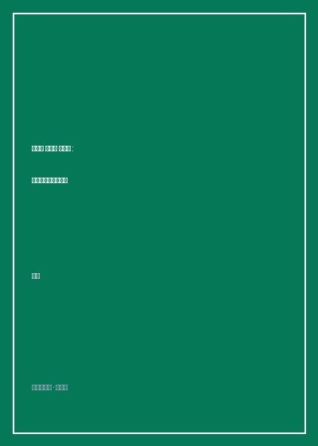

《梁漱溟、王实味、储安平》

总体观点
《梁漱溟、王实味、储安平：现代中国知识分子群》是当代知识分子精神史研究中极具厚重感与批判锋芒的名作。学者谢泳摆脱了空泛的宏大叙事，通过对民国至建国后档案史料、报章原刊以及当事人日记回忆录的细致钩沉，选取了现代中国三位极具代表性、人格截然不同却共同承载时代重负的知识分子典型——“最后的儒家”梁漱溟、延安整风中遭遇残酷清洗的托派文人王实味、以及民国自由主义政论报刊巨擘储安平。
全书深刻指出：现代知识分子的独立生存不仅取决于个人的道德风骨与学术良知，更高度依赖于外部制度环境——独立大学制度、民间自由结社、自由民办报刊出版物以及私有财产保障。一旦外部自由制度土壤在动荡与革命体制中被全面连根拔起，依附于政治权力的知识分子无论秉持儒家救世道统，还是怀抱西化自由民主理想，都不可避免地沦为时代狂飙中的无助浮萍与政治献祭品。
作者特别探讨了储安平创办《观察》杂志所达到的中国现代独立言论巅峰，以及其在政治狂飙中悲壮失踪的历史谜案；剖析了梁漱溟在最高层会议上廷争面折的惊人骨鲠；还原了王实味《野百合花》因批评等级制度而招致杀身之祸的真实机理。本书是对百年中国知识分子精神家园失落的一次深沉招魂，字里行间流淌着对思想自由与人格独立的无限敬意。
核心观点
-
1. 知识分子独立性的制度根基：大学、报刊与私有财产
知识分子的骨气不能凭空悬置。民国知识分子之所以能够发出独立抗争，在于拥有民办报纸提供稿酬、独立私立与国立大学提供教职教研空间，以及基本的资产庇护。
储安平创办《观察》周刊完全依靠民间股份与独立发行，在短短数年内发行量突破十万份，无需仰仗任何政党津贴便成为朝野最具公信力的政论旗帜。 -
2. 道统对政统的抗争：梁漱溟廷争面折的儒家风骨
梁漱溟身上体现了中国传统士大夫“以道抗势”的最高气节。在权力巅峰面前，他敢于为农民利益直言，展现出宁折不弯的真理担当与人格尊严。
在1953年全国政协常委扩大会议上，梁漱溟因坚持阐明工农“九天九地”的城乡差距，面对疾风骤雨般的批判依然当面要求“要看看毛主席有没有这个雅量”。 -
3. 文艺与政治的致命冲撞：王实味《野百合花》的宿命悲剧
怀抱纯洁理想奔赴革命圣地的文艺知识分子，误将人道主义批评视作时代常态，未能看清意识形态铁律对思想异端的零容忍，最终酿成杀身之祸。
王实味在延安发表《野百合花》，尖锐讽刺当时“歌啭玉堂春，舞回金莲步”的特权等级分化现象，随即被定性为反革命托派并最终在撤退途中被秘密处决。 -
4. 从《观察》的辉煌到生平失踪：自由主义一代的悲歌
储安平一生致力于在中国践行英美自由主义法治理想，追求言论出版自由。但当历史大潮席卷而至，自由主义中间道路被彻底撕碎，其人亦随之在狂澜中彻底湮灭。
1957年储安平发表著名的“党天下”长篇发言，直言批评国家政权机关中的党政不分现象，随后被打为大右派并在文革初期的混乱动荡中神秘失踪，至今生死成谜。 -
5. 思想改造的心理创伤：知识分子群体的自我否定与异化
建国初期的历次思想改造运动通过群众批判与当众检讨，强迫知识分子在众目睽睽下否定自身学术传承与精神尊严，导致一个时代的集体脊梁被彻底折断。
诸多名留青史的学者教授在政治集会上争先恐后地向组织痛哭忏悔，甚至主动罗织罪名检举多年的挚友同道，展现出极权机制对人性尊严的摧残。
全书思维导图 · 知识脉络树
全书结构
-
第一编：梁漱溟与乡村建设的现代求索
梳理梁漱溟山东邹平乡村建设实验、新儒家文化哲学以及在建国后敢于公开面折最高权力的历史始末。
详述梁漱溟为何拒绝按照唯物史观机械教条解释中国传统社会，坚持认为中国是“伦理本位、职业分途”。 -
第二编：王实味与延安时期的文艺异端
详尽披露延安中央研究院整风运动内幕，还原《野百合花》的发表背景、思想交锋与王实味悲剧的制度根源。
分析丁玲等左翼作家最初支持王实味到后来被迫参与批判的思想转折轨迹与心理困境。 -
第三编：储安平与《观察》时代的自由主义绝响
全景还原《观察》周刊的创办、撰稿人群体、发行网络，以及储安平“向国民党要民主、向共产党要自由”的政论思想体系。
爬梳储安平在国共内战最白热化时期如何汇聚费孝通、朱自清、潘光旦等顶级自由学人，发表独立政见抨击腐败。 -
第四编：现代中国知识分子群的制度际遇与反思
纵论近代报刊法、私立大学经费、政党组织对知识群体的渗透，深刻剖析知识分子阶层在制度变迁中的整体陨落。
对比民国时期与苏联体制下知识分子薪酬标准、住房福利与思想监控机制的深层差异。